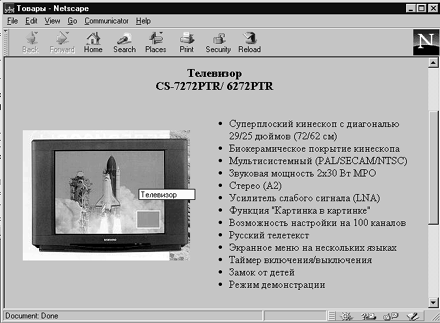

Cамыми распространенными графическими форматами в Web являются GIFи JPEG форматы. Для того, чтобы вставить изображение в Web-страницу необходимо либо нарисовать его, либо взять уже готовое. В любой программе рисования несложно нарисовать простое изображение и сохранить его в требуемом формате . Если программа не поддерживает этот формат, то необходимо преобразовать файл. Для этого существует множество программ, предназначенных для преобразования одного графического формата в другой. Позаимствовать же картинки можно из различных программных пакетов, или с других Web-страниц в Internet, содержащих библиотеки художественных изображений свободного доступа. Когда броузер выводит страницу Web с изображением, соответствующий графический файл временно хранится в памяти компьютера. В большинстве броузеров есть команда, позволяющая сохранить файл постоянно на локальном диске. Существует множество других вариантов получения графических файлов.
Изображения могут быть полезны своей информативностью и придают Web-странице привлекательный вид. Приведем наиболее распространенные случаи применения изображений:
Теперь рассмотрим как вставить изображение в страницу Web. Тэгом НТМL, который заставляет броузер выводить изображение, является <IMG> со следующим общим форматом:
<IMG SRC="picture.gif">Пример 1.8
<HTML> <HEAD> <TITLE> Товары</TITLE> </HEAD> <BODY> <H1 ALIGN=CENTER>Компания.</H1> <HR> <p ALIGN=CENTER><font color="glava~11.shtml#400040" size="4"> [ <a href="news.shtml">Новости</a> | <a href="products.shtml">Товары</a> | <a href="servis.shtml">Услуги</a> | <a href="contact.shtml">Контакты</a> | <a href="search.shtml">Поиск</a> ] </font> <HR> <H3 ALIGN=CENTER> Телевизор <BR>СS-7272РТR/ 6272РТR </H3> <br><img src="cs727.jpg" align=left hspace=20 vspace=20 ALT="Телевизор"> <UL> <LI>Суперплоский кинескоп с диагональю 29/25 дюймов (72/62 см) <LI>Биокерамическое покрытие кинескопа <LI>Мультисистемный (РАL/SЕСАМ/NTSC) <LI>Звуковая мощность 2х30 Вт МРО <LI>Стерео (А2) <LI>Усилитель слабого сигнала (LNА) <LI>Функция "Картинка в картинке" <LI>Возможность настройки на 100 каналов <LI>Русский телетекст <LI>Экранное меню на нескольких языках <LI>Таймер включения/выключения <LI>Замок от детей <LI>Режим демонстрации </UL> <HR> <H3 ALIGN=CENTER>Контактная информация</H3> <UL> <LI>Telephone (123) 12-34-56 <LI>FAX (123) 12-34-56 <LI>Почтовый адрес 123456 г. Город, ул Лесная, 106 <UL TYPE=circle>Электронная почта <BR><LI>Общая информация: abc@abc.su <LI>Продажи: abc@abc.abc.su </UL> </UL> <BR> <BLINK>Copyright</BLINK> љ 1997 Компания </BODY> </HTML>

Рис. 1.9. Вставленное в текст изображение
Замыкающего тэга не требуется. Здесь SRC означает источник (SouRCe), а имя файла представляет собой имя выводимого графического файла.
Щелкните здесь, чтобы просмотреть пример 1.8 в браузере
Изображения на странице Web могут быть использованы и в качестве гипертекстовых ссылок, как и обычный текст. Читатель страницы щелкает на изображении и отправляется на другую страницу или изображение. Для обозначения изображения как гипертекстовой метки используется тот же тэг <А>, что и для текста, но между <А> и </А> вставляется тэг изображения <IMG>:
<А НREF="адрес файла или изображения"> <IMG SRC="picture.gif"></А>
При этом изображение используемое в качестве гипертекстовой ссылки обводится дополнительной рамкой.
Для уменьшения времени загрузки страницы с графикой полезно определять в HTML-коде размер изображений. Если он известен еще до загрузки страницы, то броузер может в самом начале отвести рамку для картинки, а затем загружать текст на страницу. Если размер графического изображения определен, то броузер резервирует для него место в виде ограничивающего прямоугольника. Пока загружается графика, посетитель страницы может начать читать текст. Такая методика работы - жест вежливости по отношению к своим читателям.
Если у вас есть какая-нибудь программа для работы с графикой, то определить размер изображения нетрудно. Для начала откройте файл в графическом редакторе и определите размер картинки в пикселях. В тэге изображения задайте ширину и высоту вашей картинки таким образом:
<IMG SRC="picture.gif" WIDTH=413 НЕIGНТ=356>
Если вы не укажите размеры графических изображений, то броузер будет загружать каждую картинку целиком и только после этого переходить к загрузке текста. Это занимает время. Если размеры заданы, многие ведущие броузеры смогут начертить ограничивающий прямоугольник нужного размера и начнет заливать eго изображением. Если на странице есть другие графические объекты броузер продолжит работу с другими частями страницы, продолжая заполнять ограничивающий прямоугольник.
Атрибут АLТ= тэга IMG позволяет пользователям, броузеры которых смотрят только текст (или если в броузере отключен режим графики), получить представление о том, что за графика расположена на странице или каковы ее цели. Micrisoft Internet Explorer показывает текст из атрибута АLТ= в ограничивающем прямоугольнике, пока изображение загружается. Netscape Navigator выводит этот текст в том случае, если режим Auto Load Image выключен.
Тэг <IMG> с атрибутом АLТ= будет выглядеть следующим образом:
<IMG SRC="pic.gif" НЕIGHТ=50 WIDTH=100 АLТ="Picture">
Назад | Содержание | Вперед